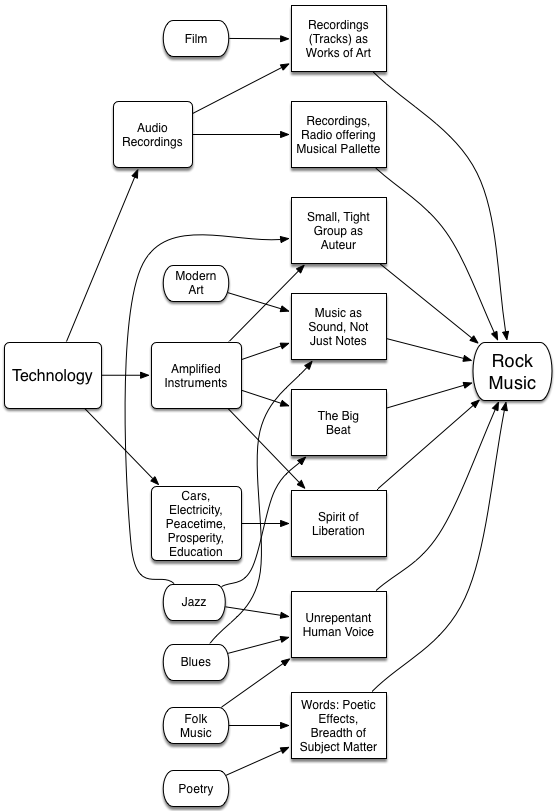

2 Elements ↑
2.1 Overview

I think there was a gradual development by the boys, as they tried to make life a bit more interesting on record. They felt, “We don’t have to go up onstage and do this; we can do it just for ourselves, and for the studio.” So it became a different kind of art form — like making a film rather than a live performance. That affected their thinking and their writing, and it affected the way I put it together, too.
George Martin, as quoted in The Beatles Anthology
There are two different ways to look at rock music. The first is to see it as an extension of rock’n roll, which is to say, just another style or genre within the overall form of popular music.
The second perspective, and the one I advocate for in this book, is to view rock as a separate form with its own aesthetic. The relationship I propose between rock and pop music is very similar to the one now widely accepted between film and theater: despite the obvious common elements, what makes a good work of art in the newer form is so different that it is worth addressing separately.
In the case of rock music, I am proposing a number of elements that together define the form. Few if any of these elements are entirely unique to rock. But I will argue that they had a stronger impact on rock music than on other forms, and that it is only in great rock music that all or most of these elements are found to converge.
In brief, these elements are as follows.
-
Technology — As depicted in the diagram above, technological advances have driven many of the changes that influenced the aesthetic development of rock music.
-
Poetry Plus — It is a truism that simply filming a great play does not produce a great film, nor would a staged version of a great film make a great play. And yet the two forms undeniably share common elements: dialogue, acting, pacing, and overall dramatic structure, to name but a few.
In a very comparable fashion, lyrics to rock songs share many elements with poetry. In particular, great rock recordings often reflect the wide-ranging subject matter and intensely personal perspective of poetry. And of course rock lyrics use many of the same devices: rhyme, meter, alliteration and so on. Rock is also able to augment the lyrics with additional devices, using voice and instruments to reinforce and extend the meaning of the words.
-
The Theme of Liberation — The overarching theme of much great rock music is that of liberation: breaking free from all sorts of restraints. This theme is expressed in the music as well as the words, with guitars making sounds never heard before, and with song structures that often go beyond the traditional verse-chorus-bridge pop format.
-
Recordings as Input to the Creative Process — To an unprecedented degree, rock musicians learned from, and were influenced by, music that was recorded and mechanically reproduced, rather than performed live in a local venue. One result was the British Invasion in the early sixties, which saw a whole generation of British bands assault the American airwaves, armed with American blues and rock’n roll recordings from which they had learned their trade.
-
Recordings as Works of Art — Quite naturally, this generation of musicians came to view the recording — and not the live performance or the musical notation of a song — as their primary artistic output. The sound of a particular track, as captured and edited in a recording studio, became more important than any characteristics that could be reproduced by the same band on stage, or by other artists performing the same song.
-
New Forms of Collaboration — Beginning with The Beatles, rock saw a new kind of artistic partnership. Groups of three, four or five individuals learned to work together as an artistic unit, writing, singing, performing and producing their own material, with most band members playing multiple, and often shifting, roles in this process. Even when a single singer/songwriter emerged, great rock was dependent on the kind of collaboration found in film, in which a number of individuals playing different roles all contributed to the artistic success of the finished work.
-
Electronic Amplification — The technical ability to amplify the sound of an instrument — particularly a guitar — was a key enabler for several other elements mentioned here. Thanks to this new-found power, a group of musicians previously limited to volumes appropriate for chamber music could now perform to a large hall or even stadium full of listeners. Electronic amplification also introduced the ability to distort and shape the sounds of the instruments, through techniques such as feedback, fuzz-tone, wah-wah pedals and countless other techniques. This electronic influence over the sounds of the notes provided something worth capturing on a recording, something that could not be adequately described through musical notation.
-
The Big Beat — Rock is known for its distinctive 4/4 rhythm with a backbeat. This simple foundation allowed singers and instrumentalists to lay all sorts of rhythmic variations on top. Rock is also known for the strength of its beat, providing much of the propulsive power of the music. Together, these rhythmic elements are used to convey the sense of liberation characteristic of the music, and so often expressed in the lyrics as well.
-
The Unrepentant Human Voice — Many other forms of music required layers of artifice concerning the quality, nature, control and power of the human voice when used as a musical instrument. Consistent with its spirit of liberation, rock music consistently emphasized the humanity of its singers, without any necessity for concealment, artifice or shame.
-
Artistic Basics — All great art shares certain elements. I talk about artistic purpose, individuality, integrity, innovation and timelessness, and point out how these are evident in the rock canon.
Let’s look at each of these elements in greater detail.